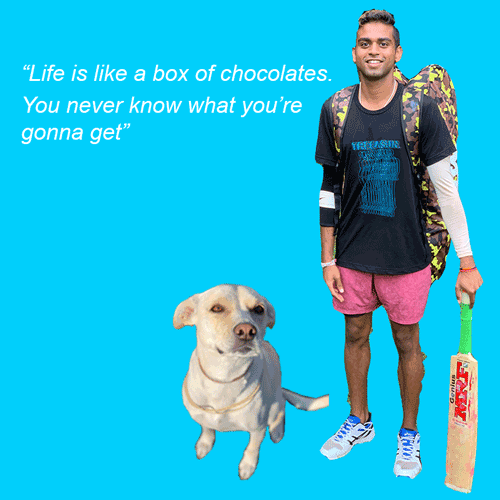

I’m a current senior at SU pursuing a major in Information Management & Technology major with a dual concentration in Data Analytics and Digital Retail Strategies
interested in focusing on analytics and the digital world of sports.
I previously had an internship with a sport analytic company that allowed me to get a deeper understanding of the potential career paths in the analytics side.
Some of my hobbies include sports such as Tennis, Cricket, soccer and pickleball.
Currently I am watching the new season of Outer Banks on Netflix.
I have a dog named Lily and she’s the cutest lab-mix puppy ever!
